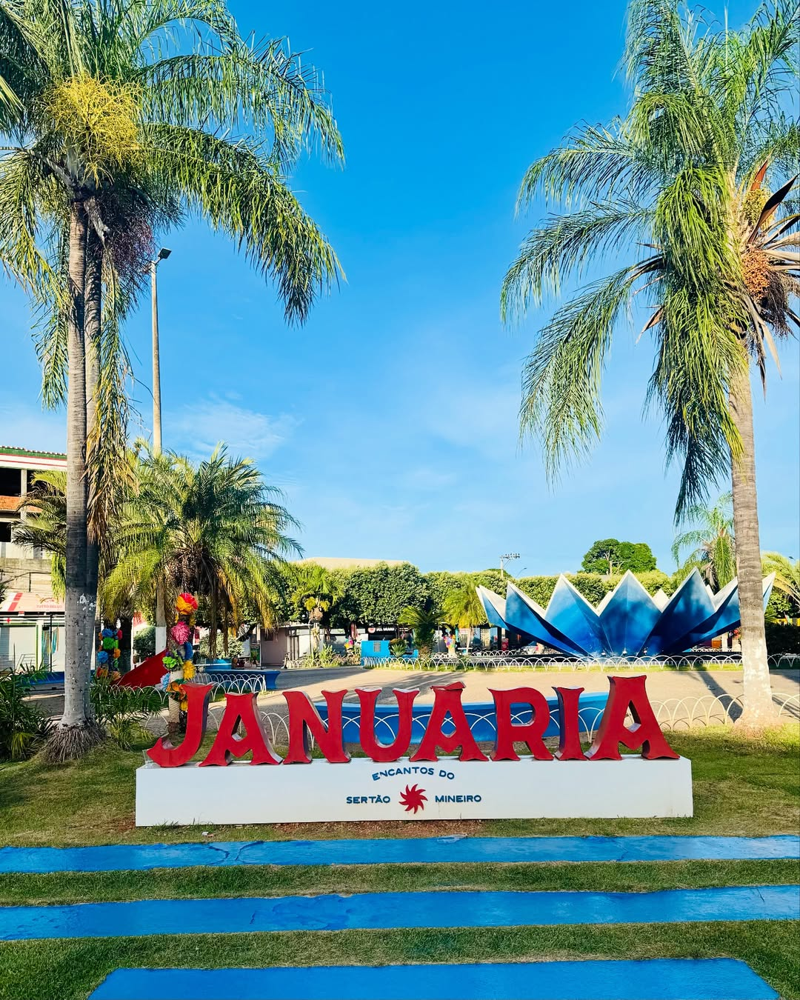
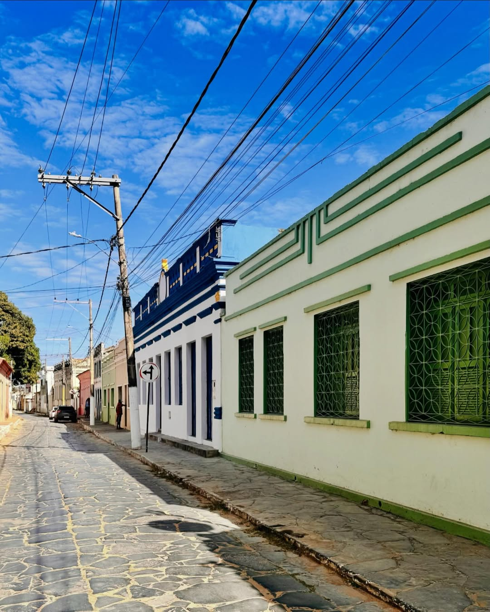

Apresentação da Cidade

Olá, eu sou Januária, ou Janu, para os mais íntimos. Você também vai ouvir eu sendo chamada por aí de Terra do Sol ou Princesinha do Norte. E quer saber? Não me importo. Sou mesmo quente como o sol e bela como uma princesa. Mas, sem falsa modéstia, te digo logo: meu calor não vem só do meu sol, mas também do afeto da minha gente januarense.
Ler apresentação completa Ocultar texto
Minha beleza é única, e está nos detalhes. Está nas águas morenas do Velho Chico, na imponência das cavernas do Peruaçu, no chiado das cachoeiras do Rio Pandeiros, na história dos meus casarões, no charme das praças, no sabor da minha cachaça artesanal e, claro, no gosto inconfundível do meu peixe frito e da minha carne de sol.
Fico feliz com sua visita! Navegue pelo Guia Janu e descubra tudo o que você precisa para explorar, se aventurar e se encantar comigo.
História de Januária
Antes da colonização portuguesa, a região onde hoje se localiza Januária era habitada por povos indígenas, como Caiapós. Com a expansão do Brasil Colônia, exploradores foram atraídos pela busca de ouro e por novas rotas de navegação pelo rio São Francisco.
Nesse contexto, bandeirantes como Matias Cardoso e seu filho Januário Cardoso atuaram intensamente na região, promovendo a ocupação do território, o desmonte de aldeias indígenas e a formação de arraiais.
Ler história completa Ocultar história
Um dos núcleos coloniais resultantes desse processo foi o Arraial do Brejo do Salgado, atualmente o distrito de Brejo do Amparo. A poucos quilômetros dali, surgiu o Porto do Salgado, às margens esquerdas do rio São Francisco, que se consolidou como entreposto estratégico para o transporte fluvial. Esse porto daria origem ao núcleo urbano que se tornaria a cidade de Januária.
Quanto à origem do nome da cidade, a versão oficial afirma que foi uma homenagem à princesa Januária, filha de Dom Pedro I. No entanto, a tradição popular preserva outras narrativas: uma delas conta que Januária seria o nome de uma escravizada foragida que estabeleceu um pequeno comércio no porto; outra atribui a denominação ao bandeirante Januário Cardoso.
Independentemente da versão, o fato histórico é que, em 7 de outubro de 1860, a antiga Vila Januária foi elevada à categoria de cidade. Ainda hoje, é possível encontrar na cidade manifestações religiosas tradicionais, festas populares, construções históricas e expressões vivas do seu rico patrimônio cultural.

Características Gerais da Cidade

Com aproximadamente 65 mil habitantes, Januária vem se destacando como um dos destinos turísticos mais encantadores do país. A cidade reúne, em um só lugar, paisagens naturais exuberantes, patrimônio histórico e hospitalidade acolhedora.
Entre seus principais atrativos estão o Cânion do Peruaçu, reconhecido como Patrimônio Mundial Natural da Humanidade pela UNESCO, o majestoso rio São Francisco com suas praias de água doce, o rio Pandeiros com cachoeiras e áreas alagadas que lhe renderam o título de “Pantanal Mineiro”, além de um centro histórico tombado pelo IEPHA/MG.
Ler características completas Ocultar texto
A economia local é impulsionada pelo comércio, agropecuária e turismo. A cidade oferece uma rede comercial diversificada, além de uma estrutura receptiva que inclui restaurantes e opções de hospedagem capazes de proporcionar ao visitante uma experiência completa.
Januária é uma terra onde o sol brilha intensamente. O clima semiárido apresenta temperaturas médias entre 17°C e 33°C. O melhor período para visitar a cidade é da segunda quinzena de julho a outubro, quando ocorre a temporada de praia e o município se torna especialmente movimentado.
A paisagem natural da região é marcada por contrastes únicos: cerrado, caatinga, matas secas e veredas com imponentes buritizeiros compõem um mosaico ecológico que faz de Januária uma área de transição entre biomas. O relevo apresenta planícies extensas, morros suaves e cavernas milenares.